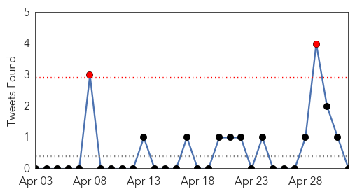

Unknown
30-Day Web Trend
0 alerts, 0 warnings
30-Day Twitter Trend
1 alerts, 0 warnings

Article Locations
Article Confidences
Top Articles:
- 0.937
- VDH identifies illness sweeping through Cold Harbor Elementary
- 0.917
- Chicago Tribune
- 0.917
- Chicago Tribune
- 0.917
- Chicago Tribune
- 0.917
- Chicago Tribune
- 0.917
- Chicago Tribune
- 0.917
- Chicago Tribune
- 0.910
- The world windows to Thailand
- 0.883
- Disease outbreak threatens Nepal’s earthquake survivors
- 0.875
- Dog Transmits Deadly Plague to Humans in Colorado
- 0.868
- Arizona officials warn of contagious livestock virus
- 0.856
- WHO issues rapid health assessment on impact of Nepal earthquake
- 0.854
- WHO: Disease Outbreak Threatens Nepal's Earthquake Survivors
- 0.800
- Deadly superbug hits Australia
- 0.785
- Lynchburg lowers fluoride level in city drinking water
- 0.775
- Dog owners warned of Alabama Rot
- 0.757
- Death toll mounts in Yemen's war ▪ Iranian.com
- 0.736
- Bedfordshire dog owners urged to beware of Alabama Rot
- 0.734
- Nepal faces risk of epidemics: Chinese experts
- 0.731
- Sussex dog owners urged to be aware of deadly Alabama Rot
- 0.731
- Nepal faces risk of epidemics: Chinese experts
- 0.708
- Amid Nepal earthquake response, echoes of Haiti
- 0.701
- Sudan: Life-saving vaccines for children in the Nuba Mountains
- 0.695
- UN warns that Yemen’s infrastructure on brink of collapse
- 0.695
- Baltimore set for weekend of rallies after officers charged in Freddie Gray’s death
- 0.695
- Police officers among dead in Burundi grenade attacks
- 0.695
- Ruth Rendell, grande dame of crime thrillers, dies at 85
- 0.695
- Nigeria frees more hostages from Boko Haram
- 0.695
- French patrol ship rescues 217 migrants off Libyan coast
- 0.695
- Exclusive: The aid worker who revealed the French army’s ‘sex abuse’ in Central Africa
- 0.695
- Charlie Hebdo brushes off PEN prize protest
- 0.695
- Burundi threatens crackdown on ‘terrorist’ protesters
- 0.695
- Six Baltimore police charged in death of Freddie Gray
- 0.695
- The Afghan interpreters cut adrift by French army
- 0.685
- Protesters take to the streets of Baltimore over Freddie Gray’s death
- 0.657
- Parents of 90 sickened Hanover students fret over mystery illness
- 0.649
- UPDATE: Digby hospital lifts visiting restrictions
- 0.646
- Contagious virus confirmed in two horses in Maricopa County
- 0.638
- ‘How Healthcare Providers Are Killing Public Health Laboratories For Their Selfish Interests’
- 0.632
- Nepal bans meat sale over pandemic fears
- 0.630
- Hopes fade of finding Nepal survivors
- 0.623
- Washington E. coli outbreak linked to Lynden Milk Makers Fest
- 0.622
- Nepal rules out finding more quake survivors
- 0.611
- Nonprofit group gives Eureka hospital poor safety rating
- 0.604
- Delaware medical team to treat Nepal survivors
- 0.589
- Delaware medical team to treat Nepal survivors
- 0.568
- Yemen's crisis in numbers - Yemen
- 0.561
- Nepal rules out finding more quake survivors « Nigerian Pilot Newspaper
- 0.557
- Nepal: UN official urges continued funding for earthquake relief efforts
- 0.551
- Bird flu virus raises questions scientists working to answer
Showing top 50 articles...
Top Tweets:
- 0.606
- (Tuit anterior) No se puede ser egoísta. No se puede ser ignorante de la condición perecedera en la que todos nos encontramos.
- 0.591
- Iowa Declares Emergency as Bird Flu Spreads via http://t.co/Ftu7596ybI infectious disease avian flu emergency
- 0.532
- (Tuit anterior) y cuestionarle a la naturaleza. De nada vale. Nada se saca de ello. Resulta mejor entender lo que ha sucedido y aceptarlo.
- 0.529
- (Tuit anterior) Porque sin espacio en el jardín más ninguna otra flor podría nacer.
Hepatitis
30-Day Web Trend
2 alerts, 0 warnings

30-Day Twitter Trend
0 alerts, 0 warnings

Article Locations
Article Confidences

Top Articles:
Top Tweets:
-
No tweets found for May 02, 2015